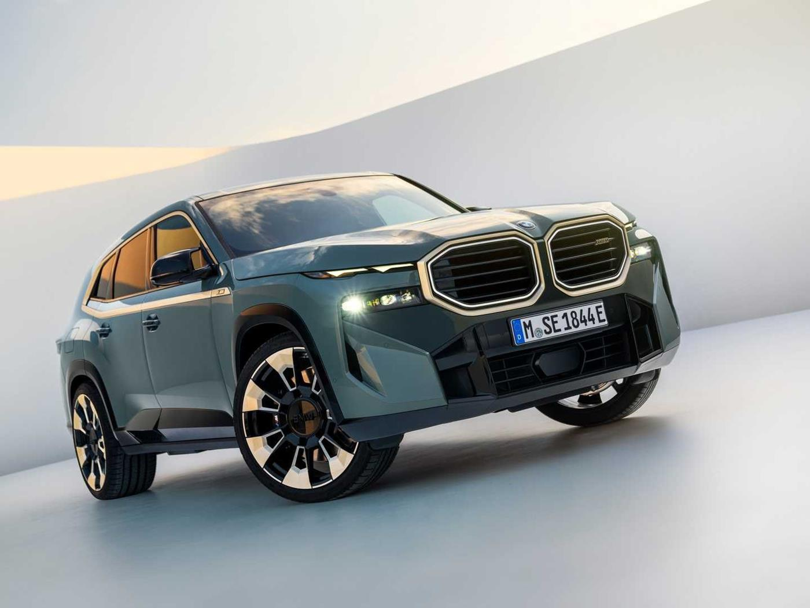
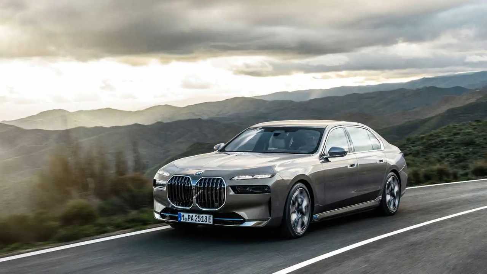

Önə çıxan modellər
Top 3

BMW i4 seriya Statistika: 4.7

BMW XM 2024 seriya Statistika: 4.9
BMW XM 2024 seriya Statistika: 4.9

BMW i7 2022 seriya Statistika: 4.1
BMW i7 2022 seriya Statistika: 4.1